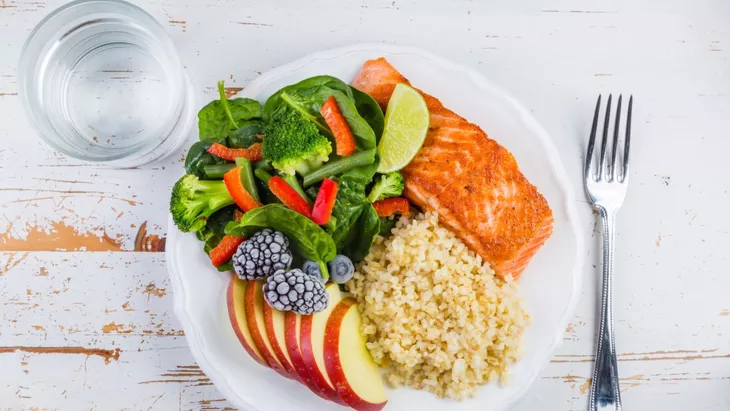

1. Ikan Salmon dan Tuna
Salmon dan tuna termasuk makanan yang menyehatkan ginjal karena mengandung asam lemak omega-3 yang tinggi. Tubuh tidak dapat membuat asam lemak omega-3 sendiri, sehingga harus didapatkan dari makanan.
Lemak omega-3 dapat mengurangi kadar lemak jahat di dalam darah. Omega-3 juga dianggap berkontribusi dalam penurunan tekanan darah.
Tekanan darah tinggi merupakan faktor risiko penyakit ginjal. Nah, penurunan tekanan darah dapat membantu melindungi ginjal.
2. Sayuran Hijau
Sayuran hijau seperti bayam dan kangkung termasuk jenis makanan untuk penderita penyakit ginjal tahap awal.
Sayuran hijau kaya antioksidan dan baik untuk memenuhi kebutuhan vitamin dan mineral.
Namun, sayuran hijau juga cenderung tinggi kalium, sehingga tidak cocok untuk pasien gangguan ginjal tahap lanjut dan menjalani hemodialisis.